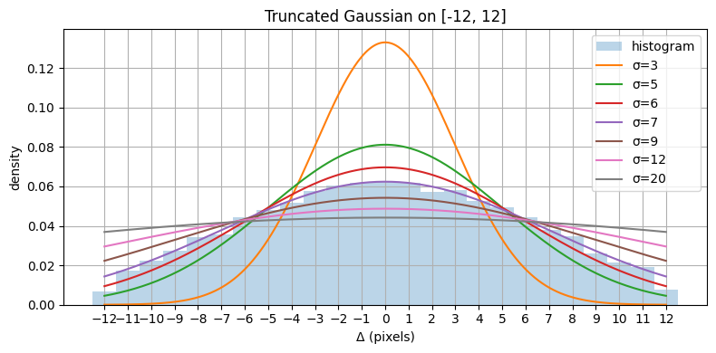

import matplotlib.pyplot as plt
ms, sigma = 12, 7 # max shift, sigma
x = np.linspace(-ms, ms, 300)
fig, ax = plt.subplots(figsize=(8, 4))
samples = sample_shift(ms, sigma, size=20000)
ax.hist(samples, bins=np.arange(-ms-0.5, ms+1.5), density=True, alpha=0.3, label='histogram')
for sigma in [3, 5, 6, 7, 9, 12, 20]:
a, b = -ms/sigma, ms/sigma
ax.plot(x, truncnorm.pdf(x, a, b, loc=0, scale=sigma), label=f'σ={sigma}')
ax.set_xlabel('Δ (pixels)'); ax.set_ylabel('density')
ax.set_xticks(np.arange(-ms, ms+1))
ax.legend(); ax.set_title(f'Truncated Gaussian on [-{ms}, {ms}]'); ax.grid(True)
plt.tight_layout(); plt.show()